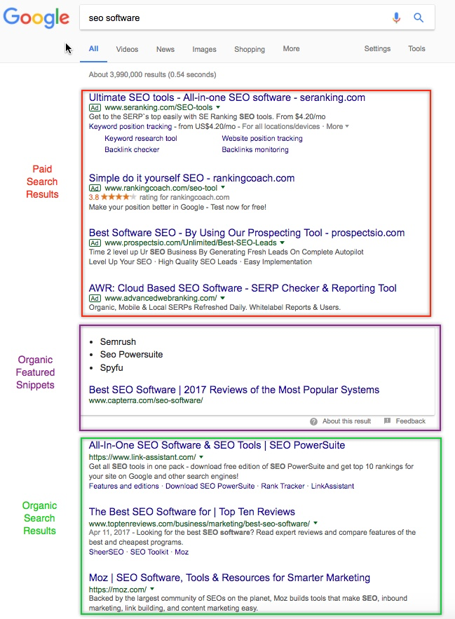
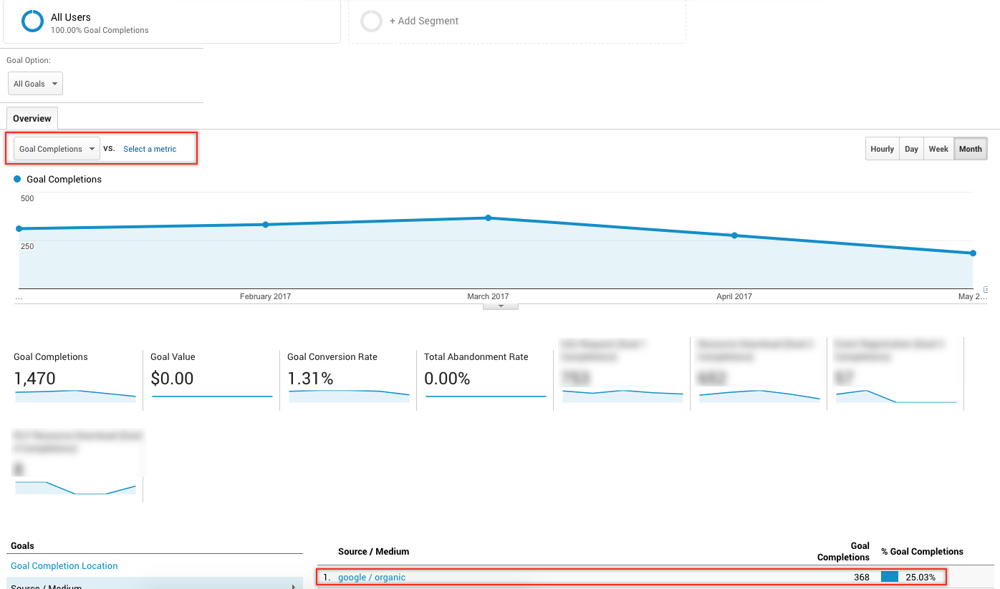

Search Engine Optimization
Tools for this class
Students will need to download and install
- Screaming Frog - it’s a free tool for SEO audits.
- They will also need Keywords Everywhere browser extension, also free. Once they install it, they will need to activate it by entering their email and receiving an API key.
What is SEO?
Search Engine Optimization (SEO) is the process of affecting the visibility of a website or a web page in a search engine’s unpaid results—often referred to as “natural,” “organic,” or “earned” results.
Why spend time working on SEO for your website?
Gaining high positions in rankings for valuable keywords can provide you with consistent high-quality traffic that will result in visitors taking preferred action on your website.
Pros of SEO:
- Consistent traffic flow
- “Free” traffic
- High conversion rates
Cons of SEO:
- Initial time investment can be quite heavy
- Volatile to search engine algorithm updates
- Depending on the niche, can be quite competitive
Goals of the website:
- Sales (E-commerce)
- Leads (Get a quote, Request a demo, Learn more)
- Donations (NGOs, NPOs, Charities)
- Advertising revenue (Blogs)
- Partnerships (Getting involved, Volunteering, etc.)
- Job (Personal portfolio & resume website)
- Brand awareness (Viral campaigns)
How do we know that SEO is working?
SEO Metrics:
- Rankings (aka SERP - Search Engine Ranking Position) - how high does the website appear in the search results for a particular keyword.
- Example goal: Increase SERP from 12 to 5 for [keyword] 
- Organic Traffic - how many visits did the website get through organic search engine results. Use Google Analytics to track.
- Example goal: Increase organic traffic to the site by 15% in 2017

- Conversions - how successful is the website at getting visitors to take action on the website. Use Google Analytics to track.
- Example goal: Increase the conversion rate of the page by 0.5%

- Domain Authority - (DA) is a score developed by Moz that predicts how well a website will rank on search engine result pages (SERP). Domain authority uses a 0 to 100 logarithmic scale. A high Domain authority score means your complete website / all the pages on your domain have the potential to rank well in search engine results. Use Moz Bar Extension to find.
- Example goal: Increase DA from 29 to 35
What can we do to optimize the website?
- Technical SEO
- Content & Keywords
- Authority Building
Technical SEO
- how to make sure search engines can access, “read” and evaluate your website.
Since search engine robots (aka spiders, bots, crawlers) can’t see the website the way you or your visitors can, it’s important to ensure they can access your website and its contents, process them and be able to make a decision about what position you should rank for.
How can we do so?
-
Sitemap - make sure you have one. Use Google Search Console or Yoast SEO Plugin (WordPress) to submit.
- On-page elements - help search engines determine what your website is about. Use Screaming Frog SEO Spider to perform SEO audit.
- Title tags (
... ) - this is one of the first elements search engine bots will look at to determine what each page is about.- Make sure it includes your target keywords for that page.
- There shouldn’t be pages with the same title tags.
- None of the pages should be missing title tags.
- H1 tags - (<h1>…</h1>) - similar to title tags, this is one of the first things bots check.
- Make sure you include keywords that describe the page contents.
- There shouldn’t be pages with the same h1 tags.
- None of the pages should be missing title h1 tags.
- There should only be one h1 tag on the page.
- URL structure - makes it easier for the bots to understand the hierarchy of your website.
- Make sure you use subdomains and folders appropriately
- Include keywords in urls
Example URL: http://www.example.com/category-keyword/subcategory-keyword/primary-keyword

-
Word count - this is a tricky one since “recommended word count for SEO” keeps changing. Some say 300 words is enough, others argue that long-form (1000+ words) content performs better. Generally, with longer content you have an ability to naturally include more keywords to your text, which search engines will pick up. My personal rule of thumb 500+ words.
-
Images - although search engine bots can’t “see” images, there is a way to make them visible by adding alt tags.
- Make sure your alt tags include your targeted keywords
- Title tags (
-
Errors - The absence of errors show search engines that your website can be easily accessed by people
- 3xx Issues (301, 302, etc. ) - Redirects. Use Screaming Frog to find them
- 4xx Issues (404 is the most common one) - Client error. Use Google Search Console or Screaming Frog to find them
- 5xx Issues (500, 502, etc.) – Server error. Use Google Search Console to find them.
- Manual Actions - alerts you get when Google flags your website or penalizes your website for shady SEO tactics. Use Google Search Console (formerly Google Webmaster Tools) to find them. Read more information on Google Manual Actions.
Technical SEO Exercise:
Visit the following websites and use Screaming Frog to fill out the Technical SEO Audit spreadsheet:
Content & Keywords
You want to structure your website’s content in a way that’s easy for search engines and people to navigate.
How can we do that?
-
Keyword Research Before you start writing and publishing content you need to figure out what your target keywords are.
Find keywords that:
- Highly relevant to what you do - For example, if you are a bakery in Barrie, don’t pick “cake recipes” as your major keyword. “bakery barrie” will probably get you more relevant traffic and is not as competitive
- Have search volume - ranking #1 for “bikes for pets” can be super relevant to what you do, however if nobody is searching for it, it doesn’t matter. Go for something like “dog bike basket” instead (3,600 monthly searches).
- Have reasonable competition levels - usually, the more general your keywords are, the more web pages compete for them. For example, “risk management” will be much more competitive than “risk management software” or “risk management services”. Evaluate your website and decide what your chances are at competing for the keywords you’ve picked.
-
Evaluate Competition Once you determined your keywords, enter them to search engines and see what results come up.
- What web pages show up for your keywords? If they are businesses similar to you, it probably means you’ve selected keywords that are relevant and have reasonable competition levels.
- What’s their Domain Authority? If you try to compete with the websites whose DA is much higher than yours most likely it will take you a very long time to appear anywhere close to the first page.
- What else do they rank for? Use tools like Ahrefs or SEMrush to see what keywords they rank for organically. Look at positions and search volume to evaluate how successful they are. Also, if they rank high for multiple keywords visit their website, analyze it and try to understand what makes them rank.
Keyword Research Exercise:
Use your website as an example.
- Come up with 3 keywords that describe what your home page is about.
- Use Keywords Everywhere to find search volume for those keywords
- Pick the keyword with the highest search volume
- Look at the websites that already rank for that keyword
- Confirm that the keyword you’ve picked is relevant
- Use serps.com/tools/keyword-research/ to find other keywords that might be relevant
- Choose 1 major keyword for the page and 1-2 secondary keywords
-
Content Creation Once you’ve identified your keywords it’s time to create content for your website. Depending on the type of website you’re building you will focus on different types of content.
- Business website - You should focus on pages that you expect will bring you the most revenue. Usually, they are Product, Service or Location pages. Start with pages that tell others what you do.
- Ecommerce website - Start with Product pages you expect will bring you the most revenue.
- Blog - Start with those blog posts that you think will be the easiest to rank well for.
You can read more about the different types of content here.
Authority Building
Show search engines that you’re considered to be an expert by others
To win at the SEO game you need to do some authority building aka “link building”. Essentially, you need others to link back to your website. Why? Because search engines track those links and think your website is more valuable the more people link to you.
A few rules:
- Partner up with websites that have a high DA - the higher the DA of a website is the more link value it can pass to you.
- Make sure the links you get are “do follow” links meaning that they are setup to pass value and not keep it. More on “do follow” vs “no follow” links here.
- DO NOT get involved in spammy link building schemes such as cloaking, hidden text, blog networks, etc. If you do, most likely you will get a manual penalty from search engines that will prevent your website from ranking at all for a very long time.
- DO plan and execute link building campaigns that build long-term partnerships. Examples of link building tactics: Influencer Marketing Campaigns, Directories, Digital PR. For a very long list and very good list of link building activities check here.
Next Steps:
If you wish to learn more about SEO, here are some resources you will find useful:
SEO Resources - guides
-
The Beginner’s Guide to SEO https://moz.com/beginners-guide-to-seo
-
Google Search Engine Optimization Starter Guide http://static.googleusercontent.com/media/
-
The Advanced Guide to SEO https://www.quicksprout.com/the-advanced-guide-to-seo/
SEO Resources - blogs
- https://moz.com/blog
- http://searchengineland.com/ - SEO/Digtial Marketing news
- https://www.searchenginejournal.com/- SEO/Digtial Marketing news
- https://inbound.org/ - a community of digital marketers sharing articles and asking questions. Good if you don’t have much time but want to see what’s happening in the industry overall
- http://www.seobook.com/blog- SEO/Digtial Marketing news
- https://ahrefs.com/blog/ - ahrefs is one of the tools mentioned above. They have a pretty good blog section with some high quality content
- http://backlinko.com/blog - really good actionable SEO content
- http://pointblankseo.com/link-building-strategies - a huge collection of link building strategies mentioned above
- http://www.annielytics.com/blog/ - Blog about analytics which goes hand in hand with SEO
Content created by Katya Bovykina